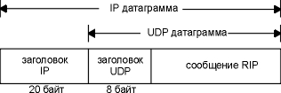
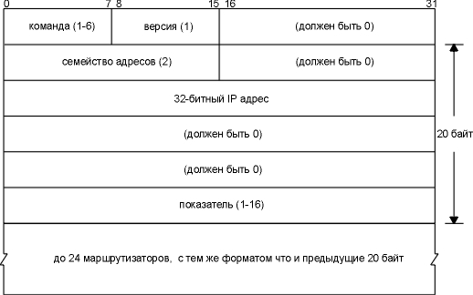
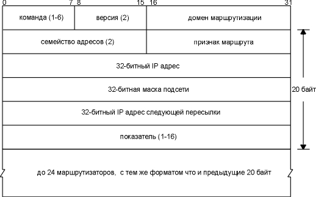

Глава 10 Динамические протоколы маршрутизации
Все о чем мы говорили в предыдущей главе, имело отношение к статической маршрутизации. Записи в таблице маршрутизации создавались при конфигурации интерфейса (для интерфейсов подключенных напрямую), добавлялись командой route (обычно из системных загрузочных файлов) или создавались с помощью ICMP перенаправления (при использовании неверных маршрутов).
Все это просто замечательно, если сеть маленькая. А именно, если существует только одна точка подключенияния к другим сетям и не существует запасных маршрутов (запасные маршруты могут быть использованы в случае выхода из строя основных). Если хотя бы одно из трех приведенных выше условий неверно, используется динамическая маршрутизация.
В этой главе рассматриваются протоколы динамической маршрутизации, которыми пользуются маршрутизаторы для общения друг с другом. Мы подробно рассмотрим RIP, протокол обмена информацией о маршрутизации (Routing Information Protocol), широко используемый протокол, который присутствует практически во всех версиях TCP/IP. Затем мы рассмотрим еще два протокола маршрутизации, OSPF и BGP. В конце главы мы познакомимся с новой техникой маршрутизации, которая называтеся безклассовой маршрутизацией между доменами, и которая начинает применяться в Internet для экономии адресов класса B.
Динамическая маршрутизация используется для общения маршрутизаторов друг с другом. Маршрутизаторы передают друг другу информацию о том, какие сети в настоящее время подключены к каждому из них. Маршрутизаторы общаются, используя протоколы маршрутизации. Пользовательский процесс, посредством которого маршрутизаторы могут общаться с соседними маршрутизаторами, называется демоном маршрутизации (routing daemon). Как видно из рисунка 9.1, демон маршрутизации обновляет таблицу маршрутизации в ядре в соответствии с информацией, которую он получает от соседних маршрутизаторов.
Динамическая маршрутизация не меняет способы, с помощью которых ядро осуществляет маршрутизацию на IP уровне, как описано в разделе "Принципы маршрутизации" главы 9. Мы назвали это механизмом маршрутизации (routing mechanism). Ядро точно так же просматривает свою таблицу маршрутизации, отыскивая маршруты к хостам, маршруты к сетям и маршруты по умолчанию. Меняется только способ помещения информации в таблицу маршрутизации - вместо запуска команды route или использования загрузочных файлов маршруты добавляются и удаляются динамически демоном маршрутизации, который работает постоянно.
Как было отмечено ранее, демон маршрутизации отвечает за политику маршрутизации (routing policy) , выбирая, какие маршруты необходимо поместить в таблицу маршрутизации. Если демон обнаружил несколько маршрутов к пункту назначения, он выбирает (каким-либо образом), какой маршрут лучше, и именно этот маршрут (единственный) добавляет в таблицу маршрутизации. Если демон определил, что канал изчез (возможно по причине выхода из строя маршрутизатора или телефонной линии), он может удалить соответствующие маршруты или добавить альтернативные маршруты, чтобы обойти возникшую неисправность.
В Internet, на сегодняшний день, используется множество различных протоколов маршрутизации. Internet организован как сообщество автономных систем (AS - autonomous systems), каждая из которых обычно администрируется независимо от остальных. Например, сеть, построенная в университетском городке, обычно считается автономной системой. Магистраль (backbone) NSFNET с точки зрения Internet это автономная система, потому что все маршрутизаторы на магистрали находятся под единым административным контролем.
Для каждой автономной системы выбирается собственный протокол маршрутизации, с помощью которого осуществляется взаимодействие между маршрутизаторами в этой автономной системе. Такой протокол называется протоколом внутренних маршрутизаторов (IGP - interior gateway protocol) или протоколом внутридоменной маршрутизации (intradomain routing protocol). Наиболее популярный IGP - это протокол обмена информацией о маршрутизации (RIP - Routing Information Protocol). Более новый IGP это протокол Open Shortest Path First (OSPF). Он был разработан как замена для RIP. Устаревший IGP, который в настоящее время не используется, HELLO - это IGP, который первоначально использовался на магистрали NSFNET вплоть до 1986 года.
Новые требования к маршрутизаторам Router Requirements RFC [Almquist 1993] определяют, что маршрутизатор, который реализует любые динамические протоколы маршрутизации, должен поддерживать OSPF и RIP, а также может поддерживать другие IGP.
Существуют протоколы маршрутизации, которые называются протоколами внешних маршрутизаторов (EGP - exterior gateway protocols) или протоколами междоменной маршрутизации (interdomain routing protocols). Они предназначены для общения между маршрутизаторами, находящихимися в разных автономных системах. Исторически (и к большому сожалению) предшественником всех EGP был протокол с тем же самым именем: EGP. Более новый EGP - протокол пограничных маршрутизаторов (BGP - Border Gateway Protocol) в настоящее время используется между магистралью NSFNET и некоторыми региональными сетями, которые подключены к магистрали. Планируется, что BGP заменит собой EGP.
В Unix системах обычно запускается демон маршрутизации, называемый routed. Он присутствует практически в каждой версии TCP/IP. Этот демон понимает только протокол RIP. (Мы опишем routed в следующем разделе.) routed предназначен для сетей малого или среднего размеров.
Альтернативная программа - gated. Этот демон поддерживает как IGP, так и EGP. [Fedor 1988] описывает раннюю реализацию gated. На рисунке 10.1 приведены протоколы маршрутизации, поддерживаемые демоном routed и двуми версиями демона gated. Большинство систем, которые используют демоны маршрутизации, запускают routed, однако если возникает необходимость поддерживать разные протоколы маршрутизации, используется gated.
Демон |
Протоколы внутренних маршрутизаторов |
Протоколы внешних маршрутизаторов |
|||
HELLO |
RIP |
OSPF |
EGP |
BGP |
|
| routed | V1 |
||||
| gated, Version 2 | · |
V1 |
· |
V1 |
|
| gated, Version 3 | · |
V1,V2 |
V2 |
· |
V2,V3 |
Рисунок 10.1 Протоколы маршрутизации, поддерживаемые routed и gated.
Мы опишем RIP Version 1 в следующем разделе, а отличия RIP Version 2, OSPF и BGP соответственно в разделах "RIP Version 2", "OSPF: открыть первым наикратчайший маршрут" и "BGP: протокол граничных маршрутизаторов" этой главы.
RIP: протокол обмена информацией о маршрутизации
В этом разделе приводится обзор RIP, так как это наиболее широко используемый протокол маршрутизации. Официальная спецификация протокола RIP находится в RFC 1058 [Hedrick 1988a], однако этот RFC был написан через несколько лет после того, как протокол получил широкое распространение.
RIP сообщения передаются в UDP датаграммах, как показано на рисунке 10.2. (Мы рассмотрим UDP в главе 11.)

Рисунок 10.2 Инкапсуляция RIP сообщения в UDP датаграмму.
На рисунке 10.3 показан формат RIP сообщения, вместе с IP адресами.
Если поле команда равно 1 - это запрос, если 2 - отклик. Существуют еще две значения поля команды (3 и 4), а также два недокументированных значения: опрос (5) и пункт опроса (6). В запросе находится требование к другой системе послать всю или часть ее таблицы маршрутизации. В отклике содержится вся или часть таблицы маршрутизации отправителя.
Поле версия обычно установлено в 1, однако для RIP Version 2 (раздел "RIP Version 2") это значение устанавливается в 2.
Следующие 20 байт сдержат: семейство адресов (которое всегда равно 2 для IP адресов), IP адрес и соответствующий показатель. В следующих разделах мы увидим, что в роли показателя RIP выступает счетчик пересылок.
В RIP сообщении может быть объявлено до 25 маршрутизаторов. Ограничение в 25 определяется полным размером RIP сообщения, 20х25+4=504, меньше чем 512 байт. Из-за ограничения в 25 маршрутизаторов, на один запрос, как правило, требуется послать несколько откликов, чтобы передать всю таблицу маршрутизации.

Рисунок 10.3 Формат RIP сообщения.
Обычное функционирование
Давайте посмотрим, как обычно работает routed с использованием RIP. Номер зарезервированного порта для RIP - UDP порт 520.
- Инициализация. Когда демон стартует, он определяет все активизированные интерфейсы и посылает пакет с запросом на каждый интерфейс, с требованием к удаленным маршрутизаторам послать полные таблицы маршрутизации. В случае канала точка-точка этот запрос отправляется на другой конец канала. Запрос рассылается широковещательными сообщениями, если сеть их поддерживает. Порт назначения - UDP порт 520 (демон маршрутизации на другом маршрутизаторе). Характеристики подобного запроса следующие: поле команды установлено в 1, поле семейство адресов установлено в 0 и показатель установлен в 16. Подобный формат соответствует специальному запросу, в ответ на который требуется послать полную таблицу маршрутизации.
- Запрос принят. В случае специального запроса, который мы только что описали, запрашивающему отправляется полная таблица маршрутизации. Иначе обрабатывается каждый пункт в запросе: если присутствует маршрут на указанный адрес, показатель устанавливается в определенное значение, иначе показатель устанавливается в 16. (Показатель, установленный в 16, это специальное значение, которое означает "бесконечно" (infinity) и сообщает, что маршрута к этому пункту назначения не существует.) Возвращается ответ.
- Ответ принят. Если ответ признан корректным, таблица маршрутизации может быть обновлена. Могут быть добавлены новые записи, существующие записи могут быть модифицированы или удалены.
- Регулярное обновление маршрутизации. Каждые 30 секунд вся или часть таблицы маршрутизации отправляется каждому соседнему маршрутизатору. Таблица маршрутизации распространяется широковещательными сообщениями (в случае Ethernet) или отправляется на другой конец канала точка-точка.
- Незапланированное обновление. Происходит в том случае, если изменяется показатель маршрута. В этом случае нет необходимости посылать таблицу маршрутизации целиком, передается только та запись, которая была изменена.
С каждым маршрутом связан тайм-аут. Если система, использующая RIP, определила, что маршрут не был обновлен в течение трех минут, показатель маршрута устанавливается в состояние "бесконечно" (16) и помечается для удаления. Это означает, что было пропущено шесть 30-секундных обновлений от маршрутизатора, который объявил маршрут. Однако, удаление маршрута из локальной таблицы маршрутизации откладывается еще на 60 секунд, чтобы убедиться что маршрут действительно исчез.
В качестве показателя в RIP используются счетчик пересылок. Для всех непосредственно подключенных интерфейсов счетчик пересылок равен 1. Рассмотрим маршрутизаторы и сети, показанные на рисунке 10.4. Четыре пунктирные линии показывают широковещательные сообщения RIP.

Рисунок 10.4 Пример маршрутизаторов и сетей.
Маршрутизатор R1 объявляет маршрут к N2 со счетчиком пересылок равным 1, послав широковещательное сообщение на N1. (Бессмысленно объявлять маршрут к N1 в широковещательном сообщении, посланном на N1.) Он также объявляет маршрут к N1 со счетчиком пересылок равным 1, послав широковещательное сообщение на N2. Точно так же, R2 объявляет маршрут к N2 с показателем 1 и маршрут к N3 с показателем 1.
Если смежный с нами маршрутизатор объявил маршрут к удаленной сети со счетчиком пересылок равным 1, то для нас показатель к этой сети будет равен 2, так пакет необходимо послать сначала на наш маршрутизатор, чтобы получить доступ к сети. В примере, приведенном выше, показатель к N1 для R2 равен 2, так же как и показатель к N3 для R1.
Так как каждый маршрутизатор посылает свои таблицы маршрутизации соседям, определяется каждая сеть в каждой автономной системе (AS). Если внутри AS существует несколько путей от маршрутизатора к сети, маршрутизатор выбирает путь с наименьшим количеством пересылок и игнорирует другие пути.
Величина счетчика пересылок ограничена значением 15, что означает, что RIP может быть использован только внутри AS, где максимальное количество пересылок между хостами составляет 15. Специальное значение показателя, равное 16, указывает на то, что на данный IP адрес не существует маршрута.
Как бы просто это ни звучало, все равно существуют проблемы. Во-первых, RIP не имеет представления о делении на подсети. Если обычный 16-битный идентификатор хоста в адресе класса В ненулевой, RIP не может определить, принадлежит ли ненулевая часть идентификатору подсети или IP адрес - это целиком адрес хоста. Некоторые реализации используют маску подсети того интерфейса, через который пришла RIP информация, однако такой способ не всегда корректен.
Во-вторых, для RIP требуется очень много времени, чтобы восстановить функционирование сети, после того как вышел из строя маршрутизатор или канал. Время обычно составляет несколько минут. В это время могут возникнуть петли маршрутизации. В современных реализациях RIP существует множество рекомендаций, которые позволяют избавляться от петель маршрутизации и увеличить скорость сходимости сетей. В RFC 1058 [Hedrick 1988a] подробно описано, как должен быть реализован RIP.
Использование количества пересылок в качестве показателя маршрутизации не позволяет использовать другие переменные, которые также должны приниматься во внимание при выборе маршрута. И в заключение, максимальное значение - 15 пересылок ограничивает размер сетей, в которых может быть использован RIP.
Мы воспользуемся программой ripquery, чтобы получить таблицы маршрутизации некоторых маршрутизаторов. ripquery отправляет один из недокументированных запросов (названный "опрос" (poll), при этом поле команда установливается в 5, рисунок 10.3) на маршрутизатор, требуя от него послать полную таблицу маршрутизации. Если ответ не получен в течении 5 секунд, посылается стандартный RIP запрос (поле команда установлено в 1). (Ранее мы говорили, что запрос с полем семейства протоколов установленным в 0 и с показателем установленным в 16 запрашивает полную таблицу маршрутизации маршрутизатора.)
На рисунке 10.5 показаны два маршрутизатора, у которых мы потребуем их таблицы маршрутизации на хосте sun. Мы запустим ripquery с sun, и получим информацию о маршрутизации с маршрутизатора следующей пересылки, netb:
sun % ripquery -n netb
504 bytes from netb (140.252.1.183): первое сообщение
содержит 504 байта
тут
удалено несколько строк
140.252.1.0, metric 1
верхний Ethernet на
рисунке 10.5
140.252.13.0, metric 1
нижний Ethernet на
рисунке 10.5
244 bytes from netb (140.252.1.183): второе сообщение с
оставшимися 244 байтами
несколько
строк удалено
Как мы и ожидали, netb объявляет нашу подсеть с показателем 1. Верхний Ethernet, к которому также подключен netb (140.252.1.0), имеет показатель равный 1. (Флаг -n говорит о необходимости выводить IP адреса в цифровом представлении, вместо того чтобы печатать имена хостов.) В этом примере netb сконфигурирован таким образом, чтобы считать все хосты, находящиеся в подсети 140.252.13, подключенными к нему напрямую - таким образом, netb ничего не знает о тех хостах, которые действительно находятся в подсети 140.252.13. Так как существует только одна точка подключения к подсети 140.252.13, объявление различных показателей для каждого хоста не имеет практического смысла.

Рисунок 10.5 Два маршрутизатора netb и gateway, на которые мы послали запрос об их таблицах маршрутизации.
На рисунке 10.6 показан обмен пакетами, который получен с помощью команды tcpdump. Мы указали SLIP интерфейс с опцией -i sl0.
sun % tcpdump -s600 -i sl0
1 0.0
sun.2879
> netb.route: rip-poll 24
2 5.014702 (5.0147) sun.2879 > netb.route: rip-req
24
3 5.560427 (0.5457) netb.route > sun.2879: rip-resp
25:
4 5.710251 (0.1498) netb.route > sun.2879: rip-resp
12:
Рисунок 10.6 Вывод команды tcpdump при запуске программы ripquery.
Первый отправляемый запрос - это команда опроса RIP (poll) (строка 1). В этом месте отрабатывается тайм-аут в 5 секунд, после чего отправляется обычный RIP запрос (строка 2). Число 24 в конце строк 1 и 2 это размер пакетов запроса в байтах: 4 байта RIP заголовок (с командой и версией), после чего следует один 20-байтовый адрес и показатель.
В строке 3 показан первый отклик, причем число 25 в конце строки указывает, что в сообщении находится 25 пар адресов и показателей, что, как мы рассчитали ранее, составляют 504 байта. Именно эту информацию выдает ripquery. Мы указали опцию -s600 для tcpdump, сообщая о необходимости прочитать из сети 600 байт. Это позволяет принять UDP датаграмму целиком (вместо того чтобы принять только ее первую часть) и затем напечатать содержимое RIP ответа.
В строке 4 показано второе ответное сообщение от маршрутизатора, со следующими 12-ю парами адресов и показателей. Мы можем рассчитать размер этого сообщения, который будет составлять 12х20+4=244, что как раз и печатала ripquery ранее.
Если мы обратимся к маршрутизатору, который находится позади netb, к gateway, то скорее всего получим, что показатель до нашей подсети 140.252.13.0 будет равен 2. Давайте проверим это предположение:
sun % ripquery -n gateway
504 bytes from gateway (140.252.1.4):
несколько
строк удалено
140.252.1.0, metric 1
верхний Ethernet на
рисунке 10.5
140.252.13.0, metric 2
нижний Ethernet на рисунке 10.5
Здесь показатель для верхнего Ethernet на рисунке 10.5 (140.252.1.0) остался равным 1, так как этот Ethernet непосредственно подключен и к gateway, и к netb, однако наша подсеть 140.252.13.0, как мы и ожидали, имеет показатель равный 2.
Еще один пример
Сейчас мы рассмотрим все обновления RIP, которые происходят в сети Ethernet без получения запросов, и посмотрим, что RIP регулярно отправляет своим соседям. На рисунке 10.7 показаны сети в noao.edu. Для простоты маршрутизаторы названы как Rn, где n - номер подсети. Каналы точка-точка показаны с помощью пунктирных линий с указанием IP адресов для каждого конца канала.

Рисунок 10.7 Сети noao.edu 140.252.
Мы запустили на Solaris 2.x программу snoop, напоминающую программу tcpdump, которую мы запускали на компьютере solaris. Эту программу можно запустить без привилегии суперпользователя, однако только для того, чтобы перехватывать широковещательные пакеты, групповые пакеты или пакеты, посылаемые на хост. На рисунке 10.8 показаны пакеты, пойманные за 60 секунд. Мы заменили большинство официальных имен хостов на наше представление в форме Rn.
solaris % snoop -P -tr udp port 520
0.00000 R6.tuc.noao.edu -> 140.252.1.255 RIP R (1 destinations)
4.49708 R4.tuc.noao.edu -> 140.252.1.255 RIP R (1 destinations)
6.30506 R2.tuc.noao.edu -> 140.252.1.255 RIP R (1 destinations)
11.68317 R7.tuc.noao.edu -> 140.252.1.255 RIP R (1 destinations)
16.19790 R8.tuc.noao.edu -> 140.252.1.255 RIP R (1 destinations)
16.87131 R3.tuc.noao.edu -> 140.252.1.255 RIP R (1 destinations)
17.02187 gateway.tuc.noao.edu -> 140.252.1.255 RIP R (15 destinations)
20.68009 R10.tuc.noao.edu -> BROADCAST RIP R (4 destinations)
29.87848 R6.tuc.noao.edu -> 140.252.1.255 RIP R (1 destinations)
34.50209 R4.tuc.noao.edu -> 140.252.1.255 RIP R (1 destinations)
36.32385 R2.tuc.noao.edu -> 140.252.1.255 RIP R (1 destinations)
41.34565 R7.tuc.noao.edu -> 140.252.1.255 RIP R (1 destinations)
46.19257 R8.tuc.noao.edu -> 140.252.1.255 RIP R (1 destinations)
46.52199 R3.tuc.noao.edu -> 140.252.1.255 RIP R (1 destinations)
47.01870 gateway.tuc.noao.edu -> 140.252.1.255 RIP R (15 destinations)
50.66453 R10.tuc.noao.edu -> BROADCAST RIP R (4 destinations)
Рисунок 10.8 RIP широковещательные сообщения, пойманные на solaris за 60 секунд.
Благодаря флагу -P пакеты ловятся не перемешиваясь, благодаря -tr печатаются соответствующие временные марки, а благодаря port 520 захватываются только UDP датаграммы у которых в качестве порта источника или порта назначения указан порт 520.
Первые 6 пакетов приходят от R6, R4, R2, R7, R8 и R3, в каждом объявляется только одна сеть. Если мы заглянем внутрь пакетов, то увидим, что R6 объявляет маршрут к сети 140.252.6.0 со счетчиком пересылок равным 1, R4 объявляет маршрут к 140.252.4.0 со счетчиком пересылок равным 1, и так далее.
Маршрутизатор gateway, однако, объявил 15 маршрутизаторов. Мы можем запустить snoop с флагом -v и посмотреть содержимое RIP сообщения. (Этот флаг выдает полное содержимое входящего пакета: Ethernet заголовок, IP заголовок, UDP заголовок и RIP сообщение. Мы удалили всю информацию за исключением информации RIP.) На рисунке 10.9 показан вывод.
Сравните объявленные счетчики пересылок для сети 140.252.1 с топологией, приведенной на рисунке 10.7.
Очень странный факт заключается в том, что в выводе на рисунке 10.8 R10 объявляет четыре сети, тогда как на рисунке 10.7 показано только три. Если мы заглянем в RIP пакет с помощью snoop, то мы увидим следующие объявленные маршруты:
RIP: Address Metric
RIP: 140.251.0.0 16 (not reachable)
RIP: 140.252.9.0 1
RIP: 140.252.10.0 1
RIP: 140.252.11.0 1
Маршрут к сети класса В 140.251 фиктивный и не должен объявляться. Он не принадлежит к noao.edu.
solaris % snoop -P -v -tr udp port 520 host gateway
много
строк удалено
RIP: Opcode = 2 (route response)
RIP: Version = 1
RIP: Address Metric
RIP: 140.252.101.0 1
RIP: 140.252.104.0 1
RIP: 140.252.51.0 2
RIP: 140.252.81.0 2
RIP: 140.252.105.0 2
RIP: 140.252.106.0 2
RIP: 140.252.52.0 3
RIP: 140.252.53.0 3
RIP: 140.252.54.0 3
RIP: 140.252.55.0 3
RIP: 140.252.58.0 3
RIP: 140.252.60.0 3
RIP: 140.252.82.0 3
RIP: 192.68.189.0 3
RIP: 140.252.57.0 4
Рисунок 10.9 RIP ответ от gateway.
Выражение "BROADCAST" в выводе snoop на рисунке 10.8 для RIP пакета, посланного R10, означает, что IP адрес назначения это ограниченный широковещательный адрес 255.255.255.255 (глава 12, раздел "Широковещательные запросы"), а не широковещательный адрес, указывающий на подсеть (140.252.1.255), который используют другие маршрутизаторы.
RFC 1388 [Malkin 1993a] определяет новые расширения RIP, которые в целом обычно называются RIP-2. Эти расширения не изменяют протокол, однако добавляют дополнительную информацию в поля, помеченные как "должны быть равны нулю" (must be zero) на рисунке 10.3. RIP и RIP-2 могут взаимодействовать в том случае, если RIP игнорирует поля, которые должны быть установлены в ноль.
На рисунке 10.10 показан формат сообщения RIP-2. Для RIP-2 поле версии устанавливается в 2.
Домен маршрутизации - это идентификатор маршрутизирующего демона, которому принадлежит этот пакет. В реализациях Unix это должен быть идентификатор процесса демона. Это поле позволяет администратору запустить RIP на одном и том же маршрутизаторе несколько раз, причем каждый будет функционировать с одним доменом маршрутизации.
Поле метки маршрута предназначено для того, чтобы поддерживать протоколы внешних маршрутизаторов. Здесь хранится номер автономной системы для EGP и BGP.
Маска подсети для каждого пункта соответствует своему IP адресу. IP адрес следующей пересылки - это IP адрес пункта назначения, куда должны посылаться пакеты. Значение 0 в этом поле означает, что пакеты должны отправляться в систему, которая послала RIP сообщение.

Рисунок 10.10 Формат сообщения RIP2.
В RIP-2 предоставляется простая схема аутентификации. Первые 20 байт в RIP сообщении содержащие семейство адресов, которое установлено в 0xffff, а поле route tag, установлено в значение 2. Оставшиеся 16 байт содержат пароль в открытом виде.
И в заключение, RIP-2 поддерживает групповые запросы в дополнение к широковещательным (глава 12). При этом уменьшается загрузка хостов, которые не принимают RIP-2 сообщения.
OSPF: "открыть первым наикратчайший маршрут" (Open Shortest Path First)
OSPF это альтернативный RIP протокол внутренних маршрутизаторов. В OSPF сняты все ограничения, присущие для RIP. OSPF Version 2 описывается в RFC 1247 [Moy 1991].
OSPF - протокол состояния канала (link-state) , тогда как RIP - протокол вектора расстояний (distance-vector) . Термин вектор расстояний означает, что сообщения, посылаемые RIP, содержат вектор расстояний (счетчик пересылок). Каждый маршрутизатор обновляет свою таблицу маршрутизации на основании векторов расстояний, который он получает от своих соседей.
Когда используется протокол состояния канала, маршрутизатор не обменивается информацией о расстояниях со своими соседями. Вместо этого каждый маршрутизатор активно тестирует статус своих каналов к каждому соседнему маршрутизатору и посылает эту информацию другим своим соседям, которые могут направить поток данных в автономную систему. Каждый маршрутизатор принимает информацию о состоянии канала и уже на ее основании строит полную таблицу маршрутизации.
С практической точки зрения основное отличие заключается в том, что протокол состояния канала работает значительно быстрее, чем протокол вектора расстояний. Нужно отметить, что в случае протокола состояния канала значительно быстрее осуществляется сходимость сети. Под понятием сходимости (converge) мы подразумеваем стабилизацию сети после каких-либо изменений, как, например, поломки маршрутизатора или выхода из строя канала. В разделе 9.3 [Perlman 1992] сравниваются между собой два типа протоколов маршрутизации.
OSPF также отличается от RIP (как и многие другие протоколы маршрутизации) тем, что OSPF использует непосредственно IP. Это означает, что он не использует UDP или TCP. OSPF имеет собственную величину, которая устанавливается в поле протокола (protocol) в IP заголовке (рисунок 3.1).
К тому же, так как OSPF это протокол состояния канала, а не протокол вектора расстояний, он имеет и другие характеристики, которые делают его предпочтительным по отношению к RIP.
- OSPF может рассчитать отдельный набор маршрутизаторов для каждого типа сервиса IP (type-of-service) (рисунок 3.2). Это означает, что для любого пункта назначения может быть несколько пунктов в таблице маршрутизации, по одному для каждого типа сервиса IP.
- Каждому интерфейсу назначается цена. Она может быть назначена на основании пропускной способности, времени возврата, надежности или по какому-либо другому параметру. Отдельная цена может быть назначена для каждого типа сервиса IP.
- Если существует несколько маршрутов к одному пункту назначения с одинаковой ценой, OSPF распределяет траффик (поток данных) поровну между этими маршрутами. Это называется балансом загруженности.
- OSPF поддерживает подсети: маска подсети соответствует каждому объявленному маршруту. Это позволяет разбить IP адрес любого класса на несколько подсетей различного размера. (Мы показали это в примере в разделе "Пример подсети" главы 3 и назвали подсетями переменной длины.) Маршруты к хостам объявляются с маской подсети, из всех единичных бит. Маршрут по умолчанию объявляется как IP адрес 0.0.0.0 с маской из всех нулевых битов.
- Каналы точка-точка между маршрутизаторами не имеют IP адресов на каждом конце. Это называется сетями без адреса (unnumbered). Такой подход позволяет сэкономить IP адреса - очень ценный ресурс в настоящее время!
- Используется простая схема аутентификации. Может быть указан пароль в виде открытого текста, так же как это делается в схеме RIP-2 (раздел "RIP Version 2").
- OSPF использует групповую адресацию (глава 12) вместо широковещательной, что уменьшает загруженность систем, которые не распознают OSPF.
Так как большинство поставщиков маршрутизаторов поддерживают OSPF, он начинает постепенно замещать собой RIP в большинстве сетей.
BGP: протокол граничных маршрутизаторов (Border Gateway Protocol)
BGP это протокол внешних маршрутизаторов, предназначенный для связи между маршрутизаторами в различных автономных системах. BGP заменяет собой старый EGP, который использовался в ARPANET. BGP Version 3 определен в RFC 1267 [Lougheed and Rekhter 1991].
RFC 1268 [Rekhter and Gross 1991] описывает использование BGP в Internet. Практически все, что приведенного ниже, взято именно из этих двух RFC. В дополнение, необходимо отметить, что в 1993 году BGP Version 4 разрабатывался таким образом (RFC 1467 [Topolcic 1993]), чтобы поддерживать CIDR, который мы опишем в разделе "CIDR: бесклассовая маршрутизация между доменами" этой главы.
Системы, поддерживающие BGP, обмениваются информацией о доступности сети с другими BGP системами. Эта информация включает в себя полный путь по автономным системам, по которым должен пройти траффик (поток данных), чтобы достичь этих сетей. Эта информация адекватна построению графа соединений AS (автономных систем). При этом возникает возможность легко обходить петли маршрутизации, а также упрощается процесс принятия решений о маршрутизации.
Во-первых, необходимо сказать, что IP датаграмма в AS может принадлежать как к локальному траффику, так и к транзитному траффику. Локальный - это траффик у которого источник и пункт назначения находятся в одной AS. При этом IP адреса источника и назначения указывает на хосты, принадлежащие одной автономной системе. Весь остальной траффик называется транзитным. Основное преимущество использования BGP в Internet заключается в уменьшении транзитного траффика.
Автономная система может принадлежать к следующим категориям:
- Ограниченная (stub) AS автономная система имеет единственное подключение к одной внешней автономной системе. В такой автономной системе присутствует только локальный траффик.
- Многоинтерфейсная (multihomed) AS имеет подсоединение к нескольким удаленным автономным системам, однако по ней запрещено прохождение транзитного траффика.
- Транзитная (transit) AS имеет подключение к нескольким автономным системам и в соответствии с ограничениями может пропускать через себя как локальный, так и транзитный траффик.
Общая топология Internet состоит из транзитных, многоинтерфейсных и ограниченных автономных систем. Ограниченные и многоинтерфейсные автономные системы не нуждаются в использовании BGP - они могут использовать EGP, чтобы обмениваться информацией о доступности с транзитными автономными системами.
BGP позволяет использовать маршрутизацию, основанную на политических решениях (policy-based routing). Все правила определяются администратором автономной системы и указываются в конфигурационных файлах BGP. "Политические решения" не являются частью протокола, однако позволяют делать выбор между маршрутами, когда существует несколько альтернативных, и позволяют управлять перераспределением информации. Решения принимаются в соответствии с вопросами безопасности или экономической целесообразности.
BGP отличается от RIP или OSPF тем, что BGP использует TCP в качестве транспортного протокола. Две системы, использующие BGP, устанавливают TCP соединения между собой и затем обмениваются полными таблицами маршрутизации BGP. Обновления представляются в виде изменений таблицы маршрутизации (таблица не передается целиком).
BGP это протокол вектора расстояний, однако, в отличие от RIP (который объявляет пересылки к пункту назначения), BGP перечисляет маршруты к каждому пункту назначения (последовательность номеров автономных систем к пункту назначения). При этом исчезают некоторые проблемы, связанные с использованием протоколов вектора расстояний. Каждая автономная система идентифицируется 16-битным номером.
BGP определяет выход из строя канала или хоста на другом конце TCP соединения путем регулярной отправки сообщения "оставайся в живых" (keepalive) своим соседям. Рекомендуемое время между этими сообщениями составляет 30 секунд. Сообщение "оставайся в живых", которое используется на уровне приложений, независимо от TCP опций "оставайся в живых" (глава 23).
CIDR: бесклассовая маршрутизация между доменами (Classless Interdomain Routing)
В главе 3 было сказано, что в настоящее время ощущается нехватка адресов класса В, поэтому узлам с несколькими сетями приходится присваивать несколько идентификаторов сетей класса С вместо одного идентификатора сети класса В. С одной стороны, появление адресов класса С решает одну проблему (переполнение количества адресов класса В). С другой стороны, появляется еще одна проблема: каждая сеть класса С требует записи в таблице маршрутизации. Бесклассовая маршрутизация между доменами (CIDR - Classless Interdomain Routing) это способ, который позволяет свести к минимуму рост таблиц маршрутизации в Internet. Этот способ также называется supernetting и описывается в RFC 1518 [Rekhter and Li 1993] и в RFC 1519 [Fuller et al. 1993], обзор можно найти в [Ford, Rekhter and Braun 1993]. CIDR одобрен Internet Architecture Board [Huitema 1993]. RFC 1467 [Topolcic 1993] кратко описывает состояние и развитие CIDR в Internet.
Основная концепция, заложенная в CIDR, заключается в том, что несколько IP адресов можно расположить определенным образом, что позволит уменьшить количество записей в таблице маршрутизации. Например, если один узел состоит из 16 адресов класса С, все 16 могут быть расположены таким образом, что они будут суммироваться, поэтому ко всем 16-ти можно будет обратиться через одну запись в таблице маршрутизации. Также, если 8 различных узлов подключены к одному и тому же Internetовскому "поставщику сервиса" через одну и ту же точку подключения к Internet, и если все 8 узлов имеют 8 различных IP адресов, они могут быть суммированы, после чего потребуется только одна запись в таблице маршрутизации, которая будет использоваться в Internet для всех 8 узлов.
Для того чтобы использовать подобное суммирование, необходимо, чтобы выполнялось три условия.
- Несколько IP адресов, которые будут сложены вместе для маршрутизации, должны иметь в своих адресах одинаковые биты старшего порядка.
- Таблицы маршрутизации и алгоритмы маршрутизации должны быть расширены таким образом, чтобы решения о маршрутизации принимались с использованием 32-битных IP адресов и 32-битных масок.
- Протоколы маршрутизации, которые будут использоваться, должны быть расширены таким образом, чтобы позволять передачу 32-битных масок и 32-битных адресов. OSPF (раздел "OSPF: открыть первым наикратчайший маршрут") и RIP-2 (раздел "RIP Version 2") способны передавать 32-битные маски, так же как и BGP Version 4.
В качестве примера скажем, что RFC 1466 [Gerich 1993] рекомендует, чтобы новые адреса класса С в Европе находились в диапазоне 194.0.0.0 - 195.255.255.255. В шестнадцатиричном представлении эти адреса лежат в диапазоне 0xc2000000 - 0xc3ffffff. Это позволяет использовать 65536 различных идентификаторов сети класса С, однако все они имеют одинаковые 7 бит старшего порядка. В других (неевропейских) странах может быть использована единственная запись в таблице маршрутизации с IP адресом 0xc2000000 и 32-битной маской 0xfe000000 (254.0.0.0), чтобы организовать маршрут ко всем этим идентификаторам сетей класса С (в количестве 65536) через одну точку. Последовательность битов в адресе класса С (это биты, следующие за 194 или 195) может быть расположена в иерархическом порядке, например, по странам или по поставщикам сервиса, чтобы тем самым позволить дополнительное сложение внутри европейских маршрутизаторов с использованием дополнительных битов, стоящих после 7 бит старшего порядка в 32-битной маске.
CIDR также использует технику, которая определяет, что "лучшее совпадение это всегда наиболее длинное совпадение (longest match)": то есть совпадение максимального количества битов в 32-битной маске. Продолжая пример из предыдущего параграфа, нужно отметить следующее. Предположим, что один поставщик сервиса в Европе нуждается в использовании другого маршрутизатора для входа в Internet, чем вся остальная Европа. Если этот поставщик сервиса находится в диапазоне адресов 194.0.16.0 - 194.0.31.255 (16 идентификаторов сетей класса С), записи в таблице маршрутизации для этих сетей должны иметь IP адрес 194.0.16.0 и маску 255.255.240.0 (0xfffff000). Датаграмма, которая маршрутизируется на адрес 194.0.22.1, будет совпадать с этим пунктом таблицы маршрутизации и с одной из сетей класса С в остальной Европе. Однако, так как маска 255.255.240 "длиннее" чем маска 254.0.0.0, будет использован пункт в таблице маршрутизации, который имеет самую длинную маску.
Термин "бесклассовый" используется потому, что решения о маршрутизации принимаются на основе масок, накладываемых на полный 32-битный IP адрес. При этом не существует различия между адресами класса А, В или С.
Первоначально предполагается использовать CIDR в адресах новых сетей класса С. Благодаря внесению подобного изменения, значительно уменьшится рост таблиц маршрутизации в Internet, при этом не потребуется вносить никаких изменений в существующие маршрутизаторы. Хотя надо отметить, что подобное решение является кратковременной мерой. Более значительное улучшение можно получить, если CIDR будет использоваться для всех IP адресов, и существующие IP адреса будут переназначены (при этом все существующие хосты получат новые адреса!) в соответствии с ограничениями по странам, континентам и поставщикам сервисов [Ford, Rekhter and Braun 1993]. Выигрыш будет заключаться в следующем: современная таблица маршрутизации содержит до 10000 записей, тогда как после применения CIDR количество записей уменьшится до 200.
Существуют два основных типа протоколов маршрутизации: протоколы внутренних маршрутизаторов (IGP - interior gateway protocol), для маршрутизаторов, находящихся внутри автономной системы (autonomous system), и протоколы внешних маршрутизаторов (EGP - exterior gateway protocol), для маршрутизаторов, которые общаются с маршрутизаторами в других автономных системах.
Наиболее популярный IGP это Routing Information Protocol (RIP), однако постепенно новый IGP - OSPF становится более популярным, и все чаще и чаще начинает заменять собой RIP. Новый и популярный EGP это Border Gateway Protocol (BGP). В этой главе мы рассмотрели RIP и типы сообщений, которые он использует. RIP Version 2 это современное расширение, которое поддерживает разбиение на подсети и другие важные улучшения. Также мы описали OSPF, BGP и бесклассовую маршрутизацию между доменами (CIDR), новую технологию, которая призвана уменьшить размер таблиц маршрутизаций в Internet.
Существует еще два OSI протокола маршрутизации, на которые Вам следует обратить внимание. Протокол междоменной маршрутизации (IDRP - Interdomain Routing Protocol) появился как версия BGP, модифицированная для использования с OSI адресами вместо IP. Протокол промежуточная система - промежуточная система (IS-IS - Intermediate System to Intermediate System) это OSI стандарт IGP. Он используется как протокол маршрутизации в сетях без соединения (CLNP - Connectionless Network Protocol), OSI протокол, похожий на IP. IS-IS и OSPF очень похожи.
Динамическая маршрутизация до сих пор остается плодотворной почвой для исследований в области межсетевого взаимодействия. Поэтому выбрать, какой протокол маршрутизации необходимо использовать и какой демон маршрутизации необходимо запустить, довольно сложно. [Perlman 1992] предоставляет множество подробностей.